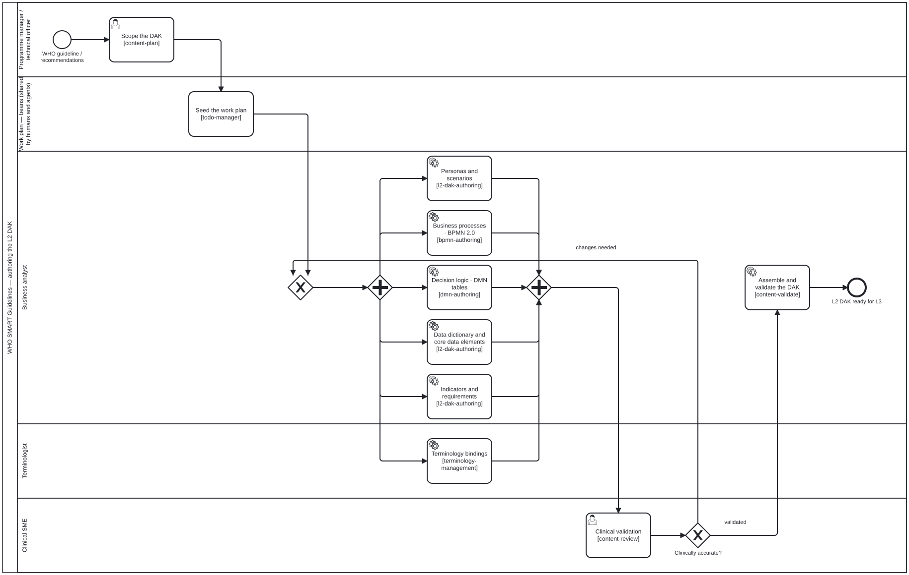

Content types
folio-assistant is content-agnostic: the platform knows nothing about any particular paper or guideline. Each kind of content is supported by a content adapter (code that knows how to validate/build/render that kind) and a skill package (the authoring formalism — what an author and the LLM do).
This page describes the formalism of each content type. It is intentionally kept separate from any concrete content; concrete artifacts live in their own content repository.
- The content lifecycle
- Documents & policy guidance
- Scientific papers & books
- WHO SMART Guidelines DAKs (L2)
- WHO SMART Implementation Guides (L3)
- Others — extending folio-assistant
The content lifecycle
Every content type moves through the same lifecycle, provided by the
cross-cutting content-lifecycle skill package:

BPMN 2.0 source · full-size SVG
{kind=link}
| Stage | Skill | What happens |
|---|---|---|
| plan | content-plan |
Scope the work, identify artifacts and actors |
| author | content-author |
Create structured artifacts from source material |
| validate | content-validate |
Check against schema + constraints |
| review | content-review |
Human / SME review against criteria |
| test | content-test |
Automated QA, build green, proofs/validators pass |
| publish | content-publish |
Render and deploy the published form |
| feedback | content-feedback |
Capture and route reviewer feedback |
| retire | content-retire |
Deprecate or archive an artifact |
The lifecycle stages are the same regardless of content type — what differs is the authoring skills and the artifacts each type produces. For the full list of skills and the roles that drive them, see Skills & roles.
Two things the eight stage names hide, and the diagram does not: author and
validate are not consecutive phases but a loop — every proposed change runs
the HCI validation gate, and the editor sees the findings before anything is
committed — and review happens twice, once per change and once over the
assembled draft. Both expand into their own diagrams on the
publication workflow page.
Documents & policy guidance
Skill package: authoring-document ·
Adapter: document ·
Guide: Writing a document
Structured prose: health-policy guidance (an L1 guideline, say), a standard, a report, a handbook, a book chapter. Everything a paper is, minus the formal layer — and therefore minus the two toolchains that serve it.
- Source model — the same tree of typed blocks as a paper, restricted to
the kinds whose content is prose rather than a formal claim:
prose,example,remark,algorithm,simulator,equation,diagram,table. - Rendering —
document_render_mdassembles the folio into one Markdown file;document_render_htmlanddocument_render_pdftake it through pandoc. The PDF path uses an HTML engine (weasyprint, prince, wkhtmltopdf) and never falls back tolatexmk, so “no TeX required” stays true rather than becoming true-until-someone-has-TeX-installed. - Enforcement —
content_profile_checkrejects a math kind, aleanfield or a.leansibling, and runs on everycontent_validate.
Relevant skill schemas:
document-authoring,
document-structure,
normative-statements,
document-publishing.

BPMN 2.0 source · full-size SVG
{kind=link}
Carrying a normative statement
A recommendation, requirement or rule is the block readers cite and
implementers trace to. It wants a label, a stable identity and a place in the
dependency graph — everything a theorem has — and it is emphatically not a
theorem, because nothing proves it.
There is no first-class recommendation block kind. Today the carrier is a
prose block with a label and a title; the
normative-statements
skill states the convention and its limits. Earlier guidance in
document-intake mapped guideline recommendations onto definition — that
predates this content type and is wrong for a document folio, where
definition is a math kind whose lean field is required.
Scientific papers & books
Skill package: authoring-math ·
Adapter: paper ·
Guide: Writing a paper
Rigorous scientific papers and books where prose and mathematics are backed by a machine-checked Lean 4 formalization and rendered through LaTeX.
A paper is a document plus Lean-bearing blocks. Everything in the section above applies here: the same block tree, the same editorial
uses[]graph, the same QA sidecars, the same lifecycle — and the Markdown render path, which works while drafting on a machine with no TeX. Thepaperadapter extends thedocumentadapter in code, for exactly that reason. What a paper adds is the seven kinds below whose assertion is a formal claim, and the two toolchains that check and typeset them.
- Source model — content is a tree of typed blocks (
definition,theorem,lemma,proof,equation,prose, …). See the TypeScript API reference forBlock,Chapter, andPaper. - Formalization —
lean-formalizationandproof-verificationskills drive Lean; each theorem-like block can be tracked against its Lean counterpart, and everysorryis auditable. - Rendering —
latex-authoringplus the paper adapter’spaper_render_pdf/paper_render_htmltools.
The seven kinds a document folio does not get, and the eight it shares:
| Block kind | Label prefix | Lean? | Profile |
|---|---|---|---|
definition |
def: |
required | paper only |
theorem / lemma / proposition / corollary |
thm: / lem: / … |
expected | paper only |
conjecture |
conj: |
optional | paper only |
proof |
prf: |
optional | paper only |
example / remark |
ex: / rem: |
optional | shared |
algorithm / simulator |
alg: / sim: |
optional | shared |
prose / equation / diagram / table |
prose: / eq: / fig: / tbl: |
n/a | shared |
The four paper only rows are MATH_BLOCK_KINDS in
schemas/block-kinds.ts;
the shared rows are DOCUMENT_BLOCK_KINDS, derived as the complement so a
kind added later cannot go unclassified.
Two of those rows are worth a second look. definition is the sharpest point
of the whole split — it is the one kind whose lean field is required rather
than optional, so a document folio could not hold one even if the profile
allowed it. And the shared kinds still declare an optional lean: the type
permits what the profile forbids, which is why content_profile_check has a
second rule beyond “is this kind allowed”.
Relevant skill schemas:
latex-authoring,
lean-formalization,
proof-verification.
WHO SMART Guidelines DAKs (L2)
Skill package: authoring-who-smart-guidelines ·
Guide: Authoring a WHO SMART DAK
A Digital Adaptation Kit (DAK) is the L2 (machine-readable, but implementation-neutral) representation of a WHO guideline. folio-assistant authors the L2 artifacts:
- Business processes — BPMN 2.0 workflows (
bpmn-authoring) - Decision logic — DMN decision tables (
dmn-authoring) - Data dictionaries / core data elements — Excel / structured tables
- Terminology — code systems and value sets (
terminology-management) - Personas, scenarios, indicators, requirements
Relevant skill schemas:
l2-dak-authoring,
bpmn-authoring,
dmn-authoring,
terminology-management.

BPMN 2.0 source · full-size SVG
{kind=link}
WHO SMART Implementation Guides (L3)
Skill package: authoring-who-smart-guidelines ·
Guide: Authoring a WHO SMART IG
The L3 layer turns an L2 DAK into a computable FHIR Implementation Guide:
- FHIR resources authored as FSH (FHIR Shorthand) and compiled with
SUSHI (
l3-fhir-authoring) - Validation against FHIR profiles (
fhir-validation) - Publication with the HL7 FHIR IG Publisher (
ig-publication) - Quality control gates (
quality-control)
Relevant skill schemas:
l3-fhir-authoring,
fhir-validation,
ig-publication,
quality-control.

BPMN 2.0 source · full-size SVG
{kind=link}
Others — extending folio-assistant
New content types are first-class: add a content adapter and a skill package, and the lifecycle, RBAC, and MCP plumbing come for free. See Adding a content type.